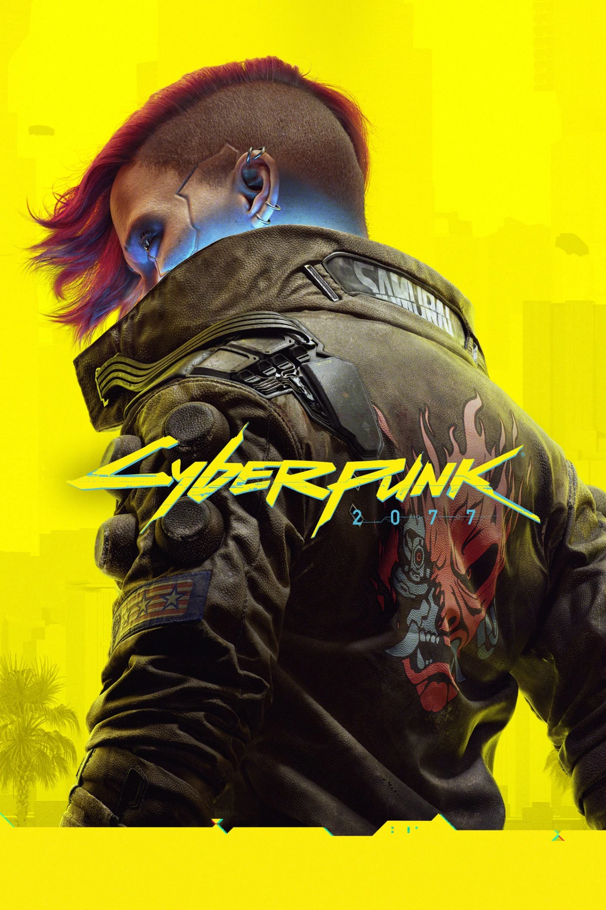
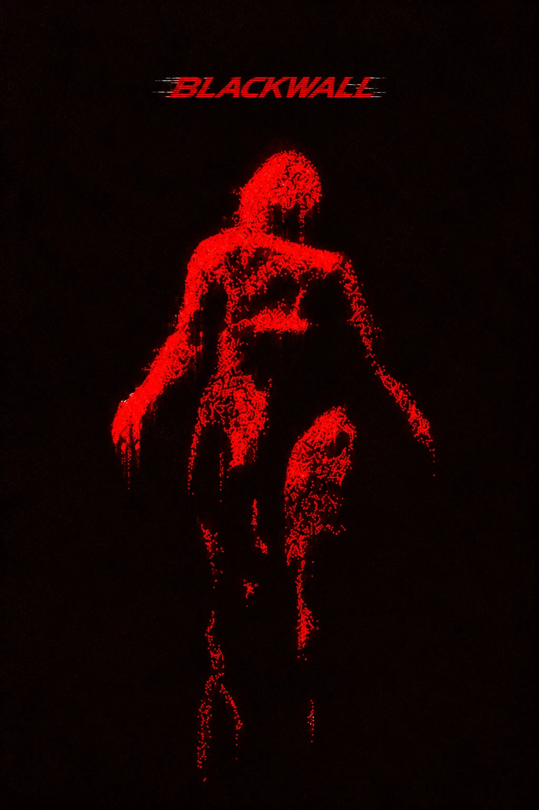
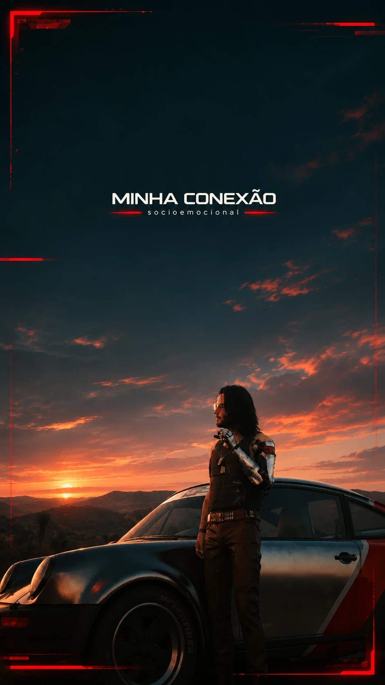
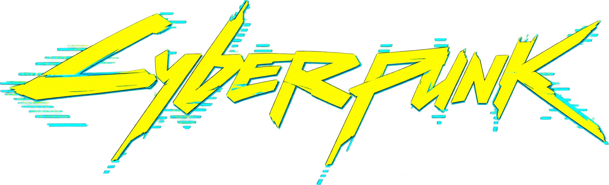
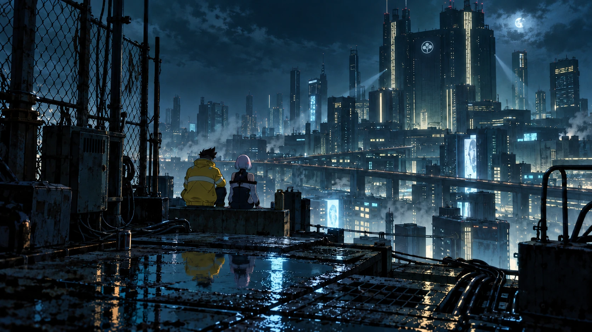

Em Night City, tecnologia e sobrevivência caminham juntas. Conheça o universo de Cyberpunk 2077.
// ARQUIVOS DE NIGHT CITY

Em Night City, tecnologia e sobrevivência caminham juntas. Conheça o universo de Cyberpunk 2077.

A Blackwall é a fronteira digital que separa a rede conhecida do que existe além dela.

Um espaço para mostrar como esse universo se conecta à minha trajetória e às pessoas ao meu redor.
// ACESSO AOS DESAFIOS
Duas experiências curtas para explorar o que a ficção revela sobre a nossa tecnologia. Entre na sua conta para jogar e acompanhar seus resultados na dashboard.
// A FRONTEIRA DA REDE
Após o colapso da antiga rede, a Blackwall foi criada para separar a parte monitorada daquilo que já não responde mais à lógica humana.
Mais do que um sistema de defesa, ela representa o limite entre aquilo que ainda controlamos e aquilo que existe além da nossa compreensão.
Descubra// O UNIVERSO CYBERPUNK 2077

Tecnologia, poder e humanidade em conflito.
Cyberpunk é um universo de futuros tecnológicos em que grandes corporações acumulam poder, enquanto pessoas comuns tentam encontrar seu lugar.
Em Night City, implantes modificam o corpo e a tecnologia faz parte de quase tudo. Mas, por trás das luzes e das máquinas, as histórias continuam sendo sobre escolhas, liberdade e sobrevivência.
Conhecer o universo

// MINHA CONEXÃO
Para mim, começou com Edgerunners. Entre os sonhos de David e Lucy, encontrei uma história que continuou comigo depois do último episódio.
Mais do que a cidade e a tecnologia, foram os vínculos, as escolhas e a vontade de pertencer que me aproximaram desse universo.
BLACKWALL nasceu dessa conexão: transformar o que uma história despertou em algo que outras pessoas possam explorar.
Minha conexão Meu desafio no projeto// CONEXÃO SOCIOEMOCIONAL
PESSOAS QUE FIZERAM PARTE DA
FAMÍLIA · TECNOLOGIA
Meu irmão faz parte do meu interesse por tecnologia desde a infância. Quando penso no caminho que me trouxe até a SPTech, ele está no começo dessa história.
Conhecer nossa história ↗
FACULDADE · APOIO
Teve semana em que foi difícil acompanhar o projeto e as outras matérias. Conversar com meus colegas nessas horas fez diferença pra mim.